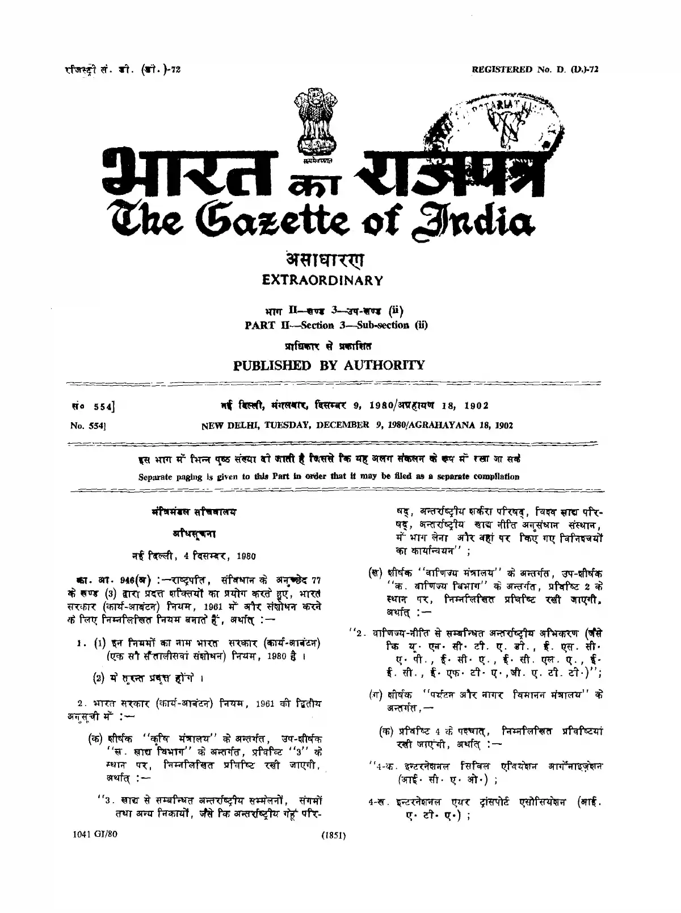
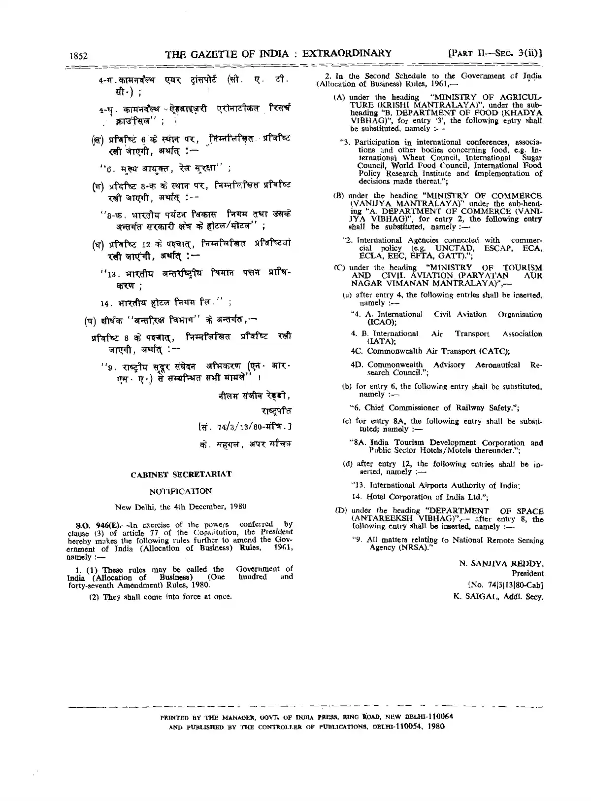

Amendment #147 (S.O. 946(E), 1980)
7 changes: 0 to the First Schedule, 7 to the Second Schedule. 7 applied
What it did to the ministries
- grewMinistry of Tourism and Civil Aviation grows from 13 to 19 subjects change 3, 4, 5, 6 · histories: Tourism and Civil Aviation
The order, page by page
Page 1 of 2

Page 2 of 2

1234567Schedule 2 › MINISTRY OF AGRICULTURE › DEPARTMENT OF FOOD › entry 3
- 3. Participation in international conferences, associations and other bodies concerning food, c.g. International Wheat Council, International Sugar Council, World Food Council, International Food Policy Research Institute and Implementation of decisions made thereat.
applied at schedule 2 › ministry Ministry of Agriculture › department B › group_heading I › entry 3 in the Rules after #147
Schedule 2 › MINISTRY OF COMMERCE › DEPARTMENT OF COMMERCE › entry 2
- 2. International Agencies connected with commercial policy (e.g. UNCTAD, ESCAP, ECA ECLA, EEC, EFTA, GATT).
applied at schedule 2 › ministry Ministry of Commerce › department A › group_heading I › entry 2 in the Rules after #147
states inferred loose
after Schedule 2 › MINISTRY OF TOURISM AND CIVIL AVIATION › entry 4
- 4. A. International Civil Aviation Organisation (ICAO)
- 4. B. International Air Transport Association (LATA)
- 4C. Commonwealth Air Transport (CATC)
- 4D. Commonwealth Advisory Aeronautical Research Council.
applied at schedule 2 › ministry MINISTRY OF TOURISM & CIVIL AVIATION › entry 4 in the Rules after #147
Schedule 2 › MINISTRY OF TOURISM AND CIVIL AVIATION › entry 6
- 6. Chief Commissioner of Railway Safety.
applied at schedule 2 › ministry MINISTRY OF TOURISM & CIVIL AVIATION › entry 6 in the Rules after #147
Schedule 2 › MINISTRY OF TOURISM AND CIVIL AVIATION › entry 8A
- 8A. India Tourism Development Corporation and Public Sector Hotels / Motels thereunder.
applied at schedule 2 › ministry MINISTRY OF TOURISM & CIVIL AVIATION › entry 8A in the Rules after #147
after Schedule 2 › MINISTRY OF TOURISM AND CIVIL AVIATION › entry 12
- 13. International Airports Authority of India
- 14. Hotel Corporation of India Ltd.
applied at schedule 2 › ministry MINISTRY OF TOURISM & CIVIL AVIATION › entry 13 in the Rules after #147
after Schedule 2 › DEPARTMENT OF SPACE › entry 8
- 9. All matters relating to National Remote Sensing Agency (NRSA).
applied at schedule 2 › department DEPARTMENT OF SPACE › entry 9 in the Rules after #147
How this document was read
Changes placed by an inference rule
| Change | Rule | Status | What |
|---|---|---|---|
| 2 | loose | accepted | change 2: department DEPARTMENT OF COMMERCE taken for department DEPARTMENT OF COMMERCF, named loosely |
From the Government of India (Allocation of Business) Rules, 1961 and their amendments, as published by the Cabinet Secretariat (cabsec.gov.in), read by orgpedia. The readings of the older scanned gazettes have known gaps.